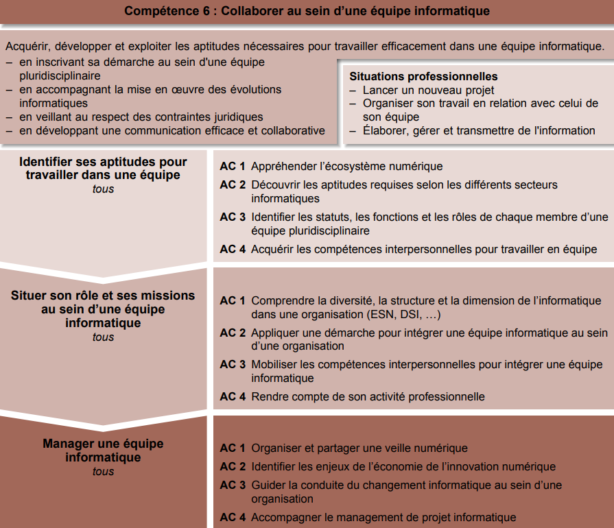

- Appréhender l’écosystème numérique - Découvrir les aptitudes requises selon les différents secteurs informatiques - Identifier les statuts, les fonctions et les rôles de chaque membre d’une équipe pluridisciplinaire - Acquérir les compétences interpersonnelles pour travailler en équipe
Apprentissage critique de la Competence

Evaluation
| Ressource | R2 Développement d'interface web | R8 Intro. Gestion Orga. | R9 Intro. Economie | R10 Anglais technique | R11 Bases de la comm. | R12 PPP |
| Coefficient | 5 | 11 | 11 | 11 | 11 | 11 |
SAE 6 Découverte de l’environnement économique et écologique
En se plaçant dans un contexte prédéterminé, il faut effectuer une présentation numérique du positionnement économique ou écologique de l'entreprise ou d'un ensemble d'entreprises, en utilisant des informations et outils pertinents.
Ressources
R2
Développement d’interfaces web
- Faire des essais et évaluer leurs résultats en regard des
spécifications
-Développer des interfaces utilisateurs
Liste des composantes essentielles
Descriptif détaillé
Objectif L'objectif de cette ressource est d'apprendre les techniques de création de documents numériques sur le web en réponse à des besoins client. Cette ressource est une base pour réaliser un développement d'application tout en appréhendant les besoins du client et de l'utilisateur. Savoir de référence étudiés Spécifications d'interfaces utilisateur, maquettage (sketch, scénarios, persona…), Technologies d'affichage du Web (par ex. : Hypertext Markup Language (HTML), Cascading Style Sheet (CSS)…), Test de la conformité des sites Web aux standards d'accessibilité World Wide Web Consortium (W3C) / Web, Accessibility Initiative (WAI) Prolongements suggérés Génération de documents numériques
R8
Introduction à la gestion des organisations
Appréhender les besoins du client et de l'utilisateur
Descriptif détaillé
Objectif L'objectif de cette ressource est de découvrir l'organisation et la transformation numérique. D'une part, la découverte de l'organisation permet une compréhension des enjeux et les besoins sous-jacents des projets internes et externes animant les acteurs qui la composent. Les défis organisationnels du XXIe siècle, comme la transformation numérique des organisations, amènent également à se questionner sur les évolutions informatiques et managériales dans le but de mieux appréhender l'écosystème numérique et le futur contexte professionnel. Savoir de référence étudiés – Fondement des organisations • Définition et finalité de l'organisation • Environnement de l'organisation • Acteurs et fonctions de l'organisation • Culture d'entreprise • Situer une activité dans une organisation – Caractéristiques stratégiques et structurelles des organisations : • Typologie des organisations • Diagnostics et choix stratégiques – Enjeux de la transformation numérique des organisations : • Digitalisation des organisations • Nouvelles formes de management • Structure en réseau et entreprise virtuelle • Responsabilité sociétale des entreprises – Les différents savoirs de référence pourront être approfondis
R9
Introduction à l’économie durable et numérique
- Mettre à jour et interroger une base de données
relationnelle (en requêtes directes ou à travers une
application)
- Visualiser des données
Descriptif détaillé
Objectif
L'objectif de cette ressource est de découvrir l'économie durable et responsable. L'essor des
données de l'information
dans la société actuelle amène des nouveaux défis économiques. L'étude de la donnée dans son
contexte permet une
meilleure visualisation des données de l'information manipulées au quotidien par
l'informaticien. Les fondements de
l'économie représentent un incontournable pour appréhender l'écosystème numérique.
Savoir de référence étudiés
– Fondements de l'économie (marchés et dysfonctionnements, acteurs économiques, croissance et
déséquilibres
économiques, politique économique, mondialisation)
– Écoconception des services numériques (économie circulaire / numérique responsable, enjeux du
développement
durable, régulation et impact du numérique)
– Enjeux économiques des données de l'information (acteurs et modèles de l'économie numérique,
marché de la
donnée)
– Les différents savoirs de référence pourront être approfondis
R10
Anglais
- Faire des essais et évaluer leurs résultats en regard des
spécifications
-Développer des interfaces utilisateurs
Descriptif détaillé
Objectif L'objectif de cette ressource est d'introduire l'anglais de spécialité informatique et de développer sa culture générale et scientifique. Cette ressource permet l'acquisition du vocabulaire de base de l'informatique. Savoir de référence étudiés Vocabulaire de base de l'informatique et de la bureautique, Initiation aux techniques de présentation orale, Compréhension des ressources à l'écrit et à l'oral (par ex. : documentations, tutoriels, documents scientifiques d'actualité…), Les différents savoirs de référence pourront être approfondis
R11
Bases de la comm
Configurer un poste de travail dans un réseau d'entreprise
Descriptif détaillé
Objectif L'objectif de cette ressource est d'aborder les fondamentaux de la communication. Cette ressource permet une approche sur l'importance de bien communiquer face à un client, de formuler ses questions de manière claire et pertinente pour recueillir les besoins du client. Elle permet de développer l'esprit critique et la capacité d'analyse nécessaires à la collecte d'informations. Enfin, la ressource permet la mise en place et l'appropriation d'outils de communication pour restituer les informations (sous formes diverses du papier au web) à destination d'un client oud'une équipe Savoir de référence étudiés – Communication verbale et non verbale – Recherche documentaire, appropriation, réutilisation de l'information, prise de notes, analyse critique des sources – Développement d'une attitude critique – Recueil des besoins (méthode de collecte, d'enquête, d'interview) – Conception de documents de communication (sous divers formats dont numériques) – Les différents savoirs de référence pourront être approfondis
R12
Projet professionnel et personnel
Tous les AC
Descriptif détaillé
Objectif L'objectif de cette ressource est d'identifier le savoir-être et le savoir-faire. Cette ressource permet de se familiariser avec les éléments constitutifs du B.U.T. informatique (AC), de mieux cerner sa connaissance de soi et d'apprendre à définir ses compétences au travers de ses expériences. Savoir de référence étudiés – Appropriation de la démarche PPP : connaissance de soi (intérêt, curiosité, aspirations, motivations), accompagnement dans la définition d'une stratégie personnelle permettant la réalisation du projet professionnel • Démarche réflexive et introspective (découverte de ses valeurs, qualités, motivations, savoirs, savoir-être, savoirs-faire) au travers, par exemple de son expérience et ses centres d'intérêt • Démarche prospective en termes d'avenir, souhait, motivation vis-à-vis d'un projet d'études ou professionnel • Initiation à la démarche réflexive (interrogation et analyse de son expérience) – Appropriation de la formation • Appropriation des compétences de la formation (identification des blocs de compétences) • Référencement des compétences et association avec la réalité du terrain • Découverte et analyse des parcours B.U.T. de la spécialité • Accompagnement du choix des parcours – Découverte des métiers et connaissance du territoire • Faire le lien avec les métiers (fiches ROME, association article 1) • Débouchés en fonction du territoire • Bassins d'entreprise, réseaux d'entreprise, implantations • Identifier les métiers en lien avec la formation, en analyser les principales caractéristiques – Projection dans un environnement professionnel • Codes, usages et culture d'entreprise • Intégration des codes sociaux au niveau France, Europe pour s'ouvrir à la diversité culturelle, ouverture sur la mondialisation socio-économique • Construire son réseau professionnel : découvrir les réseaux et sensibiliser à l'identité numérique Savoirs de référence privilégiés ce semestre – Meilleure connaissance de soi – Définition de ses compétences au travers des expériences et des SAÉ – Les différents savoirs de référence pourront être approfondis